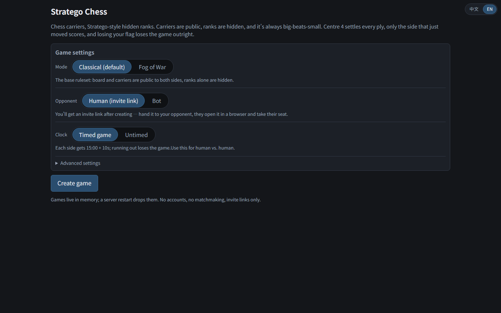

Hi, I'm Tim.
I build AI systems, then try very hard to prove they work.
Mostly agent simulations, LLM evals, and a chess variant whose rules can't leak your secrets.
See what I've built
GitHub
LinkedIn
Overview
I'm a stats student who keeps ending up building things nobody asked for. The common thread: I like putting guardrails on unpredictable systems, like language models that drift, simulated people who stop acting like themselves, and game rules that accidentally give away a hidden piece. (Yes, I've noticed the pattern. I've chosen to lean in.)
I split my time between Los Angeles and Taiwan, and I'm looking for software, AI engineering, or data roles. I'm happy to talk about any of the three.
Education
UCLA
B.S. Statistics & Data Science, minor in Data Science Engineering
Sept 2024 – Mar 2027
That's two and a half years. I'm calling it efficiency, not a cry for help.
Major GPA 3.96 Latin Honors candidate Dean's Honors List
🧪 Phygtl · Agentic Systems Engineering Intern
Summer 2026
What happens when nobody can tell if the last change made your AI better or worse?
Phygtl is an early-stage startup with an AI concierge named Lana, and when I got there, "is Lana better or worse after this change?" was answered mostly by hope. (Totally normal for a young product. Also how you get surprised later.) So I built the answer: five evaluation pipelines, from scratch, solo, still running when I left.
The idea behind all of it is to split every check by how it can fail . If the right answer is known by construction (a banned word, a planted piece of personal data), plain code checks it, because a flaky check poisons a deploy gate. Only the truly subjective questions, like "warm, but not sycophantic?", go to an LLM judge. And every check ships with a test that feeds it a deliberate violation, because a green run means nothing if the check can't fail. (Yes, I wrote tests for my tests. No, I don't feel bad about it.)
The part I'm proudest of: I argued that a pile of overlapping intents in the product should be merged, tested the claim on a 1,547-utterance set I built for it, and the CEO and AI lead adopted the change. Turns out "I have a test set" is a very persuasive sentence.
Projects
Click anything for the full story: the problem, the fix, and the bugs that made me question my life choices.
🏠 Civilizism
What if you simulated one person really well, then simulated a lot of them?
A social simulation where nobody scripts the outcome. Beliefs and relationships are just a side effect.
Open →

♟️ Stratego-Chess 行軍西洋棋
What if chess no longer has a 100% capture rate?
The child of Chess and Stratego. Pieces move like chess, but secret ranks decide who wins the fight.
Open →
⏰ WhenWhere
What if you need to find some time to meet a friend on the other side of the globe?
A day/night map that shows when everyone overlaps, and who else could still join.
Open →
🔔 Claude Code Status Card
What if you could tell which Claude Code session needs you without alt-tabbing through all of them?
A tiny always-on-top card per session: blue is working, red is "come here", green is done.
Open →
🧠
🧠 STEME & BLOC
What if you could turn "sincerity" into a number without calling an LLM every time?
Two research engines under Civilizism: semantic scoring and incremental belief clustering.
Open →
📬
📬 Cold Email Automator
What if the job hunt did its own legwork?
Researches who to contact, drafts a note around something specific, sends it, tracks replies.
Open →
💬
💬 Past Messages Analyzer
What if you could watch a friendship's tone drift over time?
Turns old Messenger and Instagram exports into a database and tracks the drift. Weirdly emotional for stats.
Open →
📚
📚 Personal Knowledge Base
What if your notes could tell you what you're missing?
Drop in documents, ask questions across them, and get an audit of where the gaps are.
Open →
The non-work me
Strong opinions, held loosely. Mostly about anime and food.
📖 《未然？已然。》 The Unobserved
What if your power depended on how sharply you understood reality?
An original fantasy novel · Traditional Chinese · in progress
In this world, every attack on a living opponent gets turned into a hallucination, so their body stays untouched until you break their mind first. At the center are a boy who sealed away his ability to feel, and a girl who senses every possibility, including the ones she kills by choosing.
Right now it's a world, a cast, and a storyboard through the first arc, planned to run past 800,000 words. The prose is the part I'm putting off. (The plan is AI help filling in between my beats, with me reviewing, and the repo says so openly.)
Read the world design
Favorites
🏐 Sport
Volleyball. I play like trash, but who can reject a sport that gives you a valid excuse to roll on the floor? Also, Haikyu is fire.
🏴☠️ Anime
One Piece. The only anime better than One Piece is One Piece before the time skip. After the time skip... 這不好說... Oda, I know you can do better.
📚 Light novel
No Game No Life. Yuu Kamiya, where is the new volume? It's been ten years. Also, your books are a bit too smart for me, but that's what 鬥智 is.
🎤 Artist
The globally renowned pick: JJ Lin (林俊傑). The hot take: 任然 (Ren Ran), no hesitation. I have a 15-hour Spotify playlist of only Ren Ran songs, and I didn't even know Spotify had that many.
🍜 Food
滷味, no hesitation. 炒麵 is a close second. In the US the closest thing is malatang, which is somehow expensive, so my US pick is Chick-fil-A. Thinking about it is making me want some right now.
🐻 School
U! C! L! A! Fight, fight, fight! I'm convinced the eight clap is written in our DNA.
💬 Quote
"We do these things not because they are easy, but because we thought they were going to be easy." John F. Kennedy did not say this. Maciej Cegłowski did.
😴 Spare time
Sleep and reading light novels when I'm broke, whiskey tasting when I'm rich. I'm a college student, so you can guess which one wins.
🏠 Civilizism
What if you simulated one person really well, then simulated a lot of them?
1 The problemMost social simulations hardcode the outcome: the rules say how groups behave, and, surprise, they behave that way. I wanted the opposite. Build one believable individual, then see whether groups, beliefs and norms show up on their own.
2 My solutionAgents that perceive, remember, reflect and plan, with memory as the hub of everything. Whatever beliefs and relationships form are a side effect and the surprise my product gives me in return. The model only proposes actions; a deterministic utility engine called SHAPE scores each one against 43 personality coefficients (Schwartz values plus HEXACO traits) and decides which actually happens. Character is enforced by code, not by prompting: a wild horse is only a good ride if you put a mathematical rein on it.
3 Challenges & fun storiesLLM agents drift based on vibes. My first four housemates snacked all day, paced between the kitchen and the living room, and once tried to blend smoothies from ingredients that didn't exist. (I'm told this is relatable.) Then they started hiding their sadness behind cheerful small talk, and I had to ask whether that was a bug or a personality trait. Humans do it constantly, so I refused to hardcode a fix and put the control in code instead.
The validation story is the nerdy one: I'm checking the whole thing against Milgram, Asch, Robbers Cave and the Stanford Prison Experiment, with predictions written down before any run so I can't cheat. The Stanford case is built so that a null result agrees with the modern reading of that study. The harness is done; the scored runs are still pending...waiting on the day I feel like letting my laptop run through an entire night and hopefully not burning down while I sleep through it.
4 Tech stack & what I learnedPython NumPy sentence-transformers LiteLLM + Instructor Pydantic React
I built the cognitive architecture from first principles because no existing agent framework had an abstraction that fit, so the whole codebase leans on a handful of libraries. Along the way I learned that memory design matters more than prompt design: memories decay on two independent clocks, so rehearsal can keep one alive but never make it immortal. I also learned that watching a simulation beats reading its JSON, which is why there's a replay viewer.
5 Demo & codeWatch a replay Public repo STEME BLOC
The core simulation code is private, and I'm happy to share it on request.
♟️ Stratego-Chess 行軍西洋棋
What if chess no longer has a 100% capture rate?
1 The problemChess is perfect information: everything is on the board. Stratego is all hidden information, but its pieces just shuffle forward one square at a time. What happens if you put the secrets onto chess movement?
2 My solutionWelcome to the child of Chess and Stratego. Every piece moves like a chess piece (public), but also carries a hidden rank (secret) that decides what it beats. You can see how an enemy piece moves, never what it can capture. It is not chess: there's no checkmate, the king is just a piece, and passing is always legal. If you came to castle your way to safety, welcome.
No friends? No worries. There's a bot to play against, and the game is LLM friendly: swap /g/ with /llm/ in the URL and a chatbot can play by fetching plain links.
3 Challenges & fun storiesThe fun problem is that information leaks everywhere. If the game announced "equal rank" and "bomb" differently, the announcement itself would reveal a hidden piece, so both read as the same mutual destruction. Engineers and the flag are both immune to bombs, because an immunity only one piece had would point right at it. If your setup timer runs out, the server deals you a random legal army, since a predictable default is a leaked army.
The bot is a particle filter that keeps a running probability for what each of your pieces might be, and it plays a little randomly on purpose: a deterministic bot leaks its own ranks over enough games just by which move it reliably picks.
4 Tech stack & what I learnedTypeScript Fastify 5 Socket.IO React 19 Vite Zustand Vitest
A four-package monorepo: a zero-dependency rules engine that is the only place a rule is decided, a server, a client, and the bot. The biggest lesson was to make a leak structurally impossible . Hidden ranks leave the server through exactly one function, so there's no display filter to forget about.
5 Demo & codePlay it Code
It's on free hosting, so the first load after a quiet spell can take up to a minute. Go stretch.
⏰ WhenWhere
What if you need to find some time to meet a friend on the other side of the globe?
1 The problemI kept doing LA-to-Taipei math in my head, and it's a worse problem than it sounds: only one of the two places does daylight saving, so the offset between them changes twice a year. And I'm lazy.
2 My solutionAdd cities to a day/night map, say when each person is free, and it shows when everyone overlaps. Every other city on the map turns green or red depending on whether it could still join. There's also a simple point-in-time converter. Daylight saving and half-hour timezones are handled properly, so you can trust this more than the old fashioned clock on your wall...as long as you can find your city on the map.
3 Challenges & fun storiesFor cities far enough apart, the real overlap can land on adjacent calendar days , so "same local window" has to be treated as a recurring daily pattern, not the date you typed. And the map itself fought me: Russia, Fiji and Antarctica drew spurious bands across the whole world because their polygons cross the antimeridian and the map library doesn't wrap. I had to split the rings.
Custom cities were another puzzle. Their timezone is inferred from the nearest known city, longitude first, since timezones are basically longitude bands, with a distance cutoff so a far-away neighbor's political quirks (looking at you, Adelaide) don't come along.
4 Tech stack & what I learnedPython FastAPI Leaflet Intl API pytest Render
The timezone math runs in the browser, mirroring a tested backend, so most interactions need no round trip. I came out knowing far more about IANA timezones than I ever wanted to.
5 Demo & codeTry it Code
Free hosting again, so it may take a moment to wake up.
🔔 Claude Code Status Card
What if you could tell which Claude Code session needs you without alt-tabbing through all of them?
1 The problemWith several Claude Code sessions open, I kept losing track of which one had finished and which was quietly stuck waiting on me.
2 My solutionOne always-on-top card per session. Blue is working, red means "come here", green is done. Click a card to jump to that repo's VS Code window, and a sound plays when something changes. Each repo gets its own animal and each session its own color, which is unnecessary and I stand by it. It's fed by global Claude Code hooks, so it doesn't care which editor you use.
3 Challenges & fun storiesFavorite bug: log rotation briefly left an empty file, the widget read that as "start over", and dead sessions came back to life. I was, technically, the necromancer. The fix was an atomic rename.
Another: sessions started from different subfolders counted as different repos, so one real project showed up as nine entries with nine icons. Now it walks up to the project root. And on Windows, Claude Code's hook layer eats backslashes in paths, which took an embarrassing amount of time to figure out.
Known issue: the red "needs approval" state is inferred rather than signalled, and it's been unreliable since Claude Code defaulted to Auto mode. Turns out the best way to fix approval prompts is to have fewer of them.
4 Tech stack & what I learnedElectron Node.js Claude Code hooks PowerShell
I learned how hooks work, why file writes should be atomic, and that fractional display scaling on Windows will quietly grow an invisible clickable region around your window if you let it.
5 CodeCode
🧠 STEME & BLOC
What if you could turn "sincerity" into a number without calling an LLM every time?
1 The problemCivilizism constantly has to translate between words and numbers: how sincere is this person, do these two memories express the same belief, are these two beliefs fighting each other? Doing that with an LLM call every time would be slow, expensive and inconsistent.
2 My solutionSTEME (Semantic Transformation & Evaluation Mapping Engine) is the translation layer. It combines calibrated embedding similarity, zero-shot entailment classification, and an emotion classifier, and it can anchor abstract concepts like sincerity using definitions plus polar behavioral examples. BLOC (Belief & Label-Oriented Clustering) groups memories into beliefs that drift as new experiences arrive, and flags opposing beliefs as internal conflict.
3 Challenges & fun storiesRaw cosine similarity is a trap: embedding scores crowd into a narrow band, so I had to recalibrate them to get any separation. And clustering by cosine similarity makes centroids crowd together as meaning drifts, so BLOC uses entailment to decide cluster membership instead.
4 Tech stack & what I learnedPython sentence-transformers NLI models scikit-learn
STEME scores 0.79–0.91 F1 across four embedding backends, roughly 4× a keyword/TF-IDF baseline, and BLOC hits 0.703 ARI on synthetic streaming data with drifting clusters. What I learned: pick the metric that matches how the thing actually fails.
5 CodeSTEME BLOC
📬 Cold Email Automator
What if the job hunt did its own legwork?
1 The problemCold outreach works, but the middle is miserable: figuring out who to contact, finding a working address, and writing something that isn't obviously a template.
2 My solutionA pipeline I use on my own job search. Claude researches targets with web search, an email verifier checks the addresses, a draft is written around one specific hook (a recent launch, a piece of news), and the email goes out through Gmail while a Google Sheets dashboard tracks status, bounces and replies. Yes, I automated the job hunt; someone still has to read the replies.
3 Challenges & fun storiesKeeping it from researching the same companies forever (each run is told to skip the 100 most recent), and keeping it cheap: roughly a few cents per sent email depending on the provider. I also made the LLM layer provider-agnostic, so Claude, GPT-4o and Gemini are interchangeable from a config file.
4 Tech stack & what I learnedPython Pydantic SQLite Gmail API Google Sheets API Claude / GPT-4o / Gemini
I learned OAuth the hard way, plus how different the three providers' web-search tools really are.
5 CodeCode
Feature-complete and tested. I'm deliberately holding off deploying it until the timing of my job search makes sense.
💬 Past Messages Analyzer
What if you could watch a friendship's tone drift over time?
1 The problemYears of messages with the same people, and no real sense of how those relationships changed. Weirdly emotional for a stats project.
2 My solutionA pipeline that ingests Facebook Messenger and Instagram exports into a normalized SQLite database, then layers analysis on top: response latency, sentiment, and rolling drift in vocabulary and tone, with changepoint detection to flag when a relationship's style actually shifts. It reuses BLOC's incremental clustering to track relationship drift in embedding space.
3 Challenges & fun storiesThe real design question was privacy. They're my friends' messages, so the AI narration layer only sees summary statistics by default. A close-reading mode exists for statistically flagged anomalies, but it's opt-in and off by default, a deliberate trade of interpretability for privacy.
4 Tech stack & what I learnedPython SQLite pandas VADER SnowNLP PELT changepoints Jupyter
I learned that reusing a component from another project (BLOC) is a good test of whether it was designed well, and that you need two sentiment tools if your friends write in two languages.
5 CodeCode
📚 Personal Knowledge Base
What if your notes could tell you what you're missing?
1 The problemI built this for a non-technical user with a pile of documents and no way to ask questions across them, or to know what they hadn't covered yet.
2 My solutionDrop in a PDF, Word doc or text file. An LLM turns it into a tagged wiki entry, you can ask questions against the whole knowledge base (or just some topics) with sources cited, and a per-topic "knowledge audit" lists your strengths, gaps and what to read next. Nothing humbles you like a list of what you haven't read.
3 Challenges & fun storiesLeft alone, LLM tagging invents near-duplicates ("ml", "machine-learning", "machine learning") until the tags are useless, so each ingest shows the model the existing tags and tells it to reuse them. I also chose to answer questions by loading the relevant entries into the prompt instead of building a vector search. At this scale it's simpler, cheaper and easier to debug, and the sources are exactly what the model saw.
4 Tech stack & what I learnedPython Vercel serverless Supabase Gemini API pdfplumber Chart.js
What I learned: knowing when not to use retrieval is a skill. I also swapped the SDK for plain HTTP calls to keep the serverless bundle small.
5 CodeCode